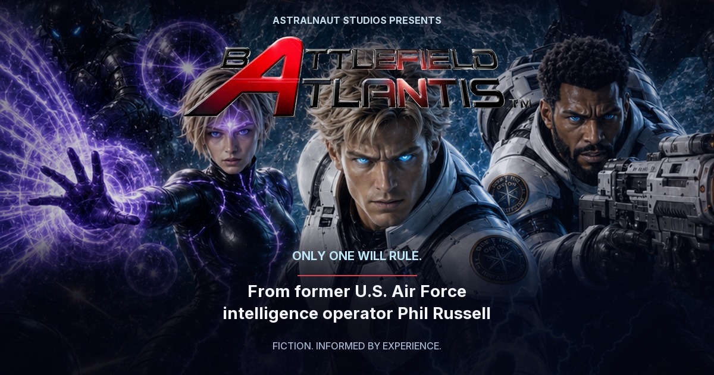

Battlefield Atlantis
Astralnaut Studios · Website share kit
8-second silent loop. Press play to review. Playback is intentional; no automatic motion.
Static social card

Battlefield Atlantis — Only One Will Rule
A science-fiction epic by former U.S. Air Force intelligence operator Phil Russell, who held Top Secret/SCI clearance for over three decades. UAP crash-retrieval claims remain unconfirmed.
Local design review. Recipient animation and cached link-card behavior have not been tested in iMessage or Messenger.